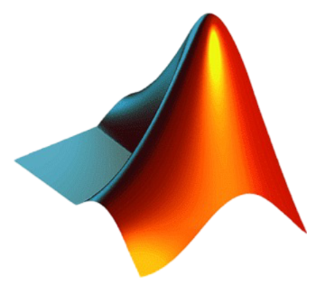

Skills
Java

Python
C

C++

HTML
CSS
Linux

Git

Matlab

Javascript
Electrical and Computer Engineering @ UT Austin
isabella.zaens@utexas.edu
linkedin.com/in/isabella-zaens/
👋 Hi! I'm Isabella, a third-year undergraduate studying Electrical and Computer Engineering at UT Austin.
📚 I have a strong background in computer architecture, analog and digital circuits, and software development, and I am eager to apply my skills to tackle complex and meaningful challenges.
🤖 My technical interests lie in computer architecture, ASIC design, integrated circuits, and software development. I’ve worked on projects ranging from developing embedded software for an EMG-driven hand exoskeleton to designing a programmable stopwatch/timer on an FPGA and creating a cycle-level simulator for the LC-3b microarchitecture.
🚀 I love tinkering, building new ideas, and enjoy collaborating with others who share this passion for creating and experimenting. If you're interested in working together, feel free to reach out!
View my resume.
Java
Python
C
C++
HTML
CSS
Linux
Git
Matlab
Javascript


Texas Instruments - Dallas, TX
UT Austin - Austin, TX
AMD - Austin, TX
ReNeu Robotics Lab - Austin, TX
| ECE 460N |
Computer Architecture |
| ECE 319H |
Embedded Systems Honors |
| ECE 360C |
Algorithms |
| ECE 312H & 422C |
Software Design and Implementation I & II |
| ECE 313 |
Linear Systems and Signals |
| ECE 411H |
Circuit Analysis & Theory Honors |
| ECE 316 |
Digital Logic Design |
| M 325K |
Discrete Math |
| M 340L |
Linear Algebra |
| M 427L |
Vector Calculus |
| ECE 351H |
Probability and Statistics Honors |
| ECE 445L |
Embedded Systems Design Lab |
| ECE 460J |
Data Science Lab |
| ECE 438 |
Fundamentals of Microelectronics Lab |